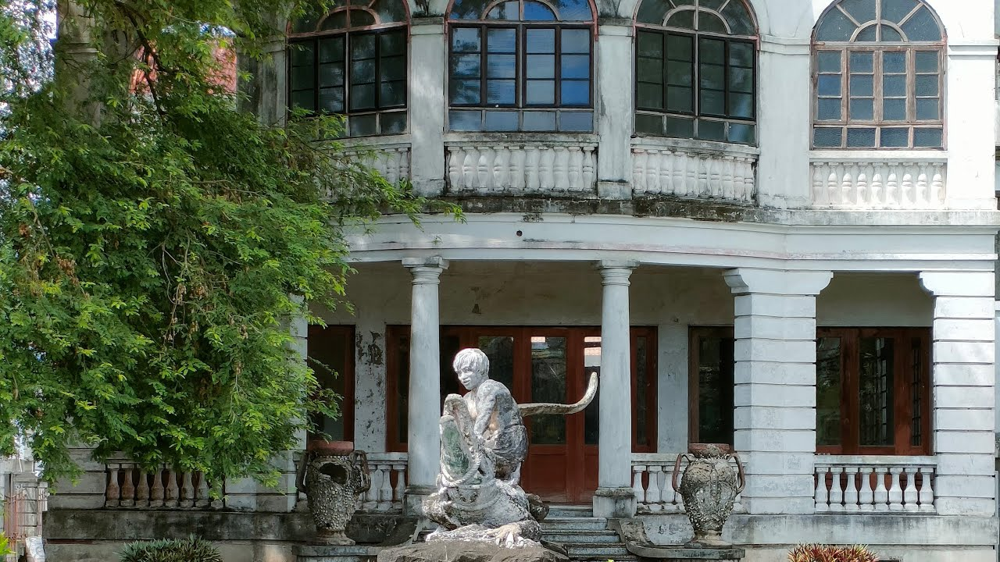

Image Gallery



The Doña Concha Umali Ancestral House, located in Tiaong, Quezon, is a well-preserved heritage home that offers visitors a glimpse into the region's cultural history and its paranormal legends. Built in the early 1900s, the house is recognized for its traditional Filipino-Spanish architecture, featuring intricate wooden carvings, high ceilings, and spacious verandas. While it stands as a symbol of Tiaong’s rich past, the house has also gained notoriety for its eerie atmosphere, earning a reputation as one of the most haunted places in the area.
The Doña Concha Umali Ancestral House is a prime example of early 20th-century Filipino architecture influenced by Spanish colonial design. Its grand wooden structure showcases traditional craftsmanship with finely detailed carvings, wooden capiz shell windows, and wide-open spaces. The interiors feature antique furniture and family heirlooms, which have been carefully maintained to reflect the grandeur of the house’s past. The home’s spacious balconies, decorative balustrades, and wooden floors create a nostalgic atmosphere, transporting visitors back to an earlier era in Filipino history.
Over the years, the Doña Concha Umali Ancestral House has been the subject of numerous ghost stories and paranormal encounters. Locals say that the house is haunted by the spirit of Doña Concha Umali, the original owner of the house. It is believed that Doña Concha, a woman of stature and influence in Tiaong, continues to roam the halls of her home long after her death. Visitors and caretakers have reported seeing her apparition, especially during the late hours of the night, with some claiming to hear footsteps and whispers in the empty rooms.
One of the most famous legends involves an old mirror inside the house. It is said that if you look into the mirror at midnight, you may see the reflection of Doña Concha or other mysterious figures staring back at you. These chilling tales have made the house a destination for thrill-seekers and ghost hunters alike, though its eerie reputation does not overshadow its historical and cultural significance.
Despite its haunted reputation, the Doña Concha Umali Ancestral House remains an important cultural landmark in Tiaong. It stands as a reminder of the town’s historical roots and the influence of wealthy Filipino families during the Spanish colonial period. The house often serves as a venue for educational tours, where visitors can learn more about the local history, architecture, and legends. The preservation of this ancestral home reflects the town's dedication to honoring its heritage while sharing its intriguing past with the public.